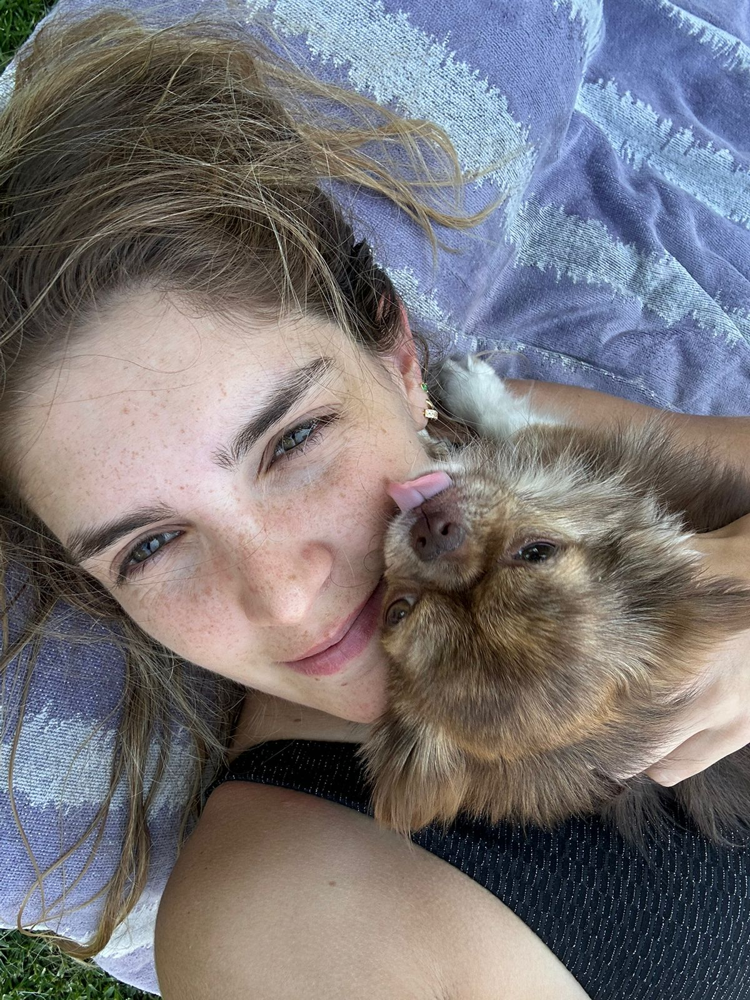
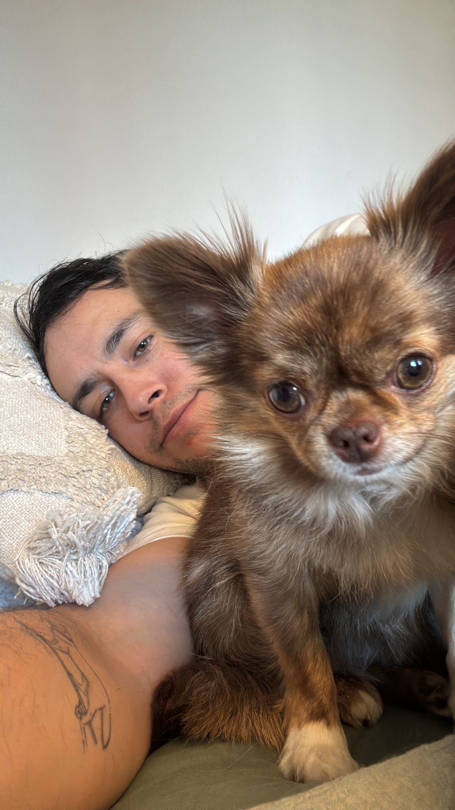
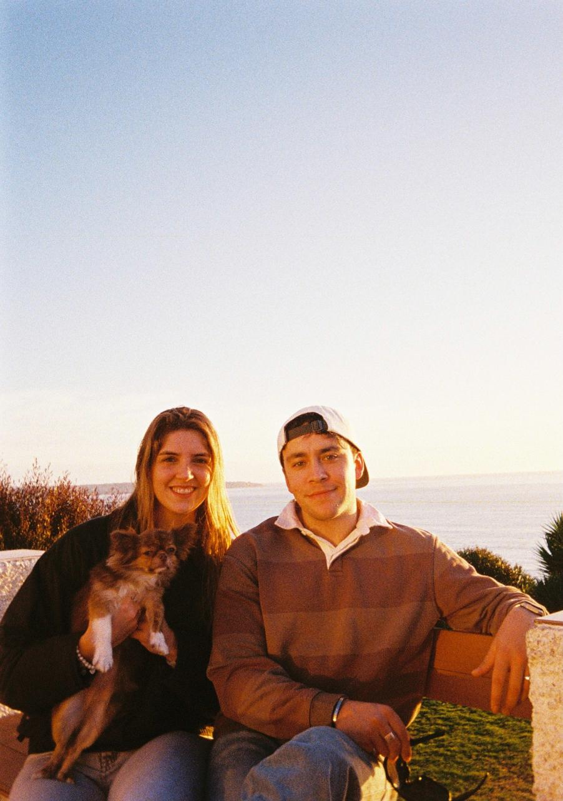

El día a día
Lo cotidiano también
es una forma de amor.
es una forma de amor.

Enfermera. Se desempeña en Clínica MEDS, donde ha desarrollado una reconocida capacidad de contención, criterio clínico y manejo de situaciones complejas. Se caracteriza por su paciencia, cercanía y una disposición constante hacia el cuidado de otros.
"Just shower the people
you love with love."

Abogado corporativo, aunque frecuentemente es asociado a otras disciplinas debido a su perfil poco convencional. Combina rasgos introvertidos y extrovertidos, con una fuerte inclinación creativa que, en ocasiones, deriva en proyectos de naturaleza difícil de categorizar.
Ha desarrollado con Kiki un vínculo muy cercano, marcado por la constancia, el cuidado y la vida cotidiana compartida. Sin embargo, en el día a día, la preferencia de Kiki por Josefina es evidente.
Josefina y Santiago se conocieron la noche del 7 de enero de 2023 en la discoteca Teatro Alicia. Ambos habían salido con sus respectivos grupos de amigos, sin saber que esa noche terminaría siendo el inicio de todo.
El primer encuentro fue algo confuso. Santiago, que no se sentía del todo cómodo con cómo su grupo había logrado entrar, intentó iniciar una conversación con Josefina, pero los nervios le jugaron en contra y terminó diciendo cosas que no tenían mucho sentido. Josefina, por su parte, no entendió muy bien por qué este desconocido le hablaba con tanto interés de su reloj inteligente o de su contador de pasos.
"Alta y rubia" — la descripción que casi arruinó todo.
El momento de la presentación equivocadaMás tarde, ya dentro de la fiesta, Santiago quiso encontrarla nuevamente y le pidió ayuda a un amigo para que se la presentara. La única descripción que dio fue "alta y rubia", lo que terminó en una presentación con una mujer completamente equivocada. Avergonzado por la situación, decidió retirarse rápidamente con una excusa poco convincente.
Sin embargo, la noche no terminó ahí. Más adelante, se volvieron a encontrar en la pista de baile y, juntando valor, Santiago le pidió su número. Justo en ese momento, sus amigos decidieron cambiar de lugar, por lo que tuvo que irse de forma abrupta, dejando una impresión algo extraña.
Cerca del final de la noche, alrededor de las 4 de la mañana, volvieron a coincidir. Josefina estaba tratando de encontrar un medio para volver a su casa sin mucho éxito, y fue ahí cuando Santiago le ofreció pedirle un auto desde su propia aplicación. Le propuso que después le devolviera el dinero, ya que ahora tenía su número.
"No acepto el dinero. Pero puedes invitarme a un helado."
La propuesta que lo cambió todo — cerca de las 4 AMCuando Josefina llegó bien a su casa, le preguntó cuánto le debía. Santiago, en una decisión que terminaría marcando la historia, le dijo que no aceptaría el dinero, pero que podía invitarlo a un helado. Esa invitación se transformó en su primera cita.
Desde entonces, el helado quedó como una deuda simbólica que nunca ha sido completamente saldada, y también como una tradición entre ellos. El resto de la historia se dio de manera natural, construyendo una relación que, desde ese día, no ha dejado de crecer.
La vida cotidiana de Josefina y Santiago se mueve entre la organización y la improvisación. Desde entrenamientos y trabajo, hasta planes que aparecen sin previo aviso, han encontrado una forma de convivir que combina estructura con espontaneidad.
Josefina aporta orden, constancia y una capacidad natural de cuidado, mientras que Santiago introduce ideas nuevas y a veces una forma distinta de enfrentar lo cotidiano. Esa mezcla ha definido la dinámica de la relación.
Disfrutan de los pequeños momentos, de reírse de situaciones absurdas y de acompañarse en lo que hacen, desde lo más importante hasta lo más simple. Es en ese equilibrio donde han construido una relación sólida, natural y profundamente complementaria.

El próximo capítulo se escribe en Casona Johnson.
Guarda la fecha.